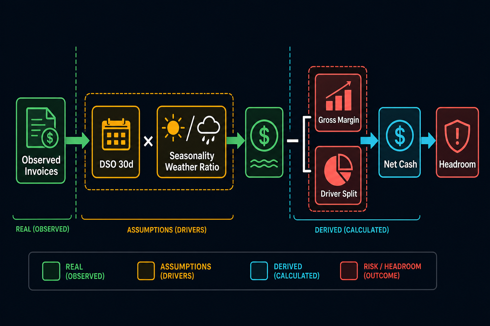

Observed
Milestone inflow
Booking-level revenue rows from sales ledgers, classified as milestone_in.
KPI Methods · Controller Reference
The KPI model is deliberately explainable. It combines observed invoice bookings, CFO-stated payment policy, seasonality, margin assumptions, and weather work-day ratios. No black-box ML is used.

Observed
Booking-level revenue rows from sales ledgers, classified as milestone_in.
Assumption
CFO-stated invoice-to-payment lag. Acceptance-to-invoice lag is 7 days and baked into baseline.
Derived
78% of receipts become costs, split 45% materials, 35% subcontractors, 20% labour.
Placeholder
Starting cash €1M minus a floor equal to 6× recent weekly revenue until covenant docs arrive.
cash_in[p,w] = sum(bookings where
booking_date + DSO lands in week w)
DSO base = 30 days
wet = +7 days
dry = -3 daysfuture_in[p,w] = recent_weekly_avg[p]
× monthly_seasonality[p, month(w)]
× scenario_revenue_multiplier
× (1 + growth_yoy)out_total = cash_in × (1 - gross_margin)
materials_out = -out_total × 0.45
subcon_out = -out_total × 0.35
labour_out = -out_total × 0.20net_cash[w] = cash_in[w] - outflows[w]
cum_cash[w] = starting_cash + cumsum(net_cash)
floor = 6 × recent_weekly_revenue
headroom = cum_cash - floor| KPI / field | Meaning | Source | Dashboard label |
|---|---|---|---|
amount_net | Credit minus debit; positive revenue booking | Raw ledger exports | Observed booking |
milestone_in | Customer receipts driver from invoiced milestones | GL 8000–8005 or sales journal fallback | Observed / projected inflow |
materials_out | Estimated roofing material cash cost | Derived from margin and 45% split | Derived from gross-margin assumption |
subcon_out | Estimated subcontractor cash cost | Derived from margin and 35% split | Derived from gross-margin assumption |
labour_out | Estimated labour cash cost | Derived from margin and 20% split | Derived from gross-margin assumption |
confidence | Observed, mixed, projected, kpi_projected, derived, or weather-derived | Forecast notebook | Solid/dashed line or badge |
work_day_ratio | Mon–Fri work-day score sum divided by 5 | KNMI weather model | Weather productivity ratio |
headroom_eur | Cash above placeholder covenant floor | Covenant notebook | Placeholder covenant headroom |
Dry, mild, no strong wind.
Light rain: 1–10 mm/day.
Heavy rain >10 mm/day, mean temp <0 °C, or wind >10 m/s.
Future weather scenarios use 2022–2024 climate normals: base = median, wet = 10th percentile work-day ratio, dry = 90th percentile. Weather-adjusted forecast scales inflow by weather_ratio and records implied delay as (1 - ratio) × 14 days.
booking_number, source_file, booking_date, amount_net.